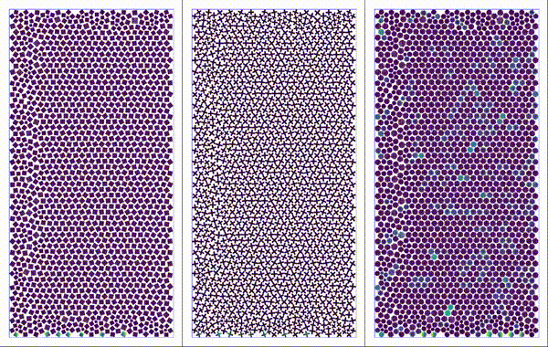
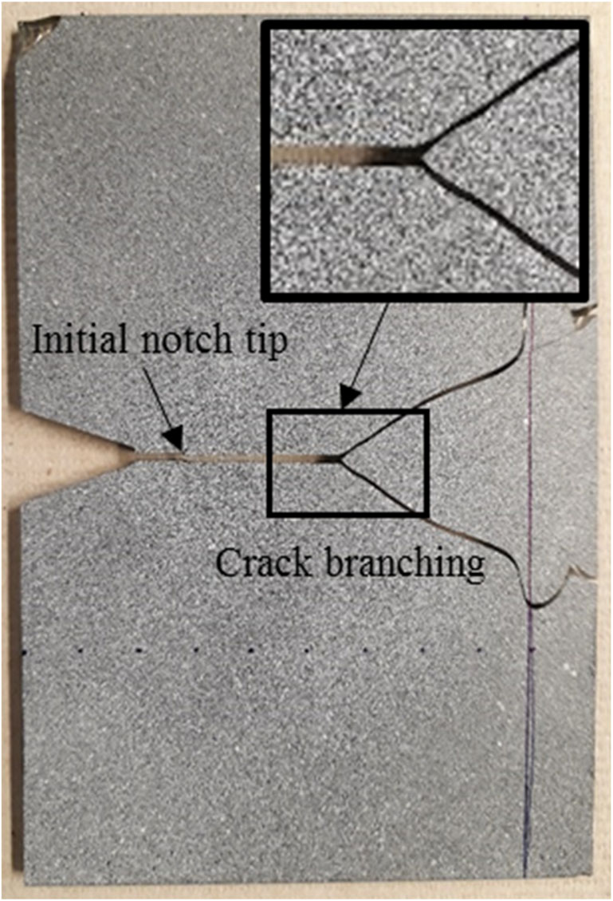
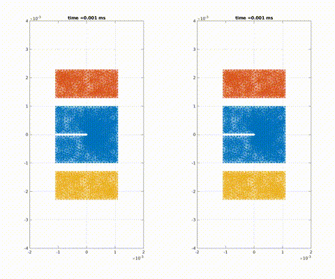
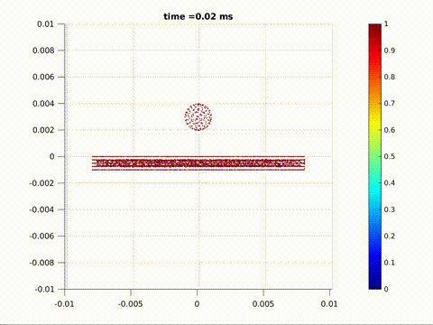
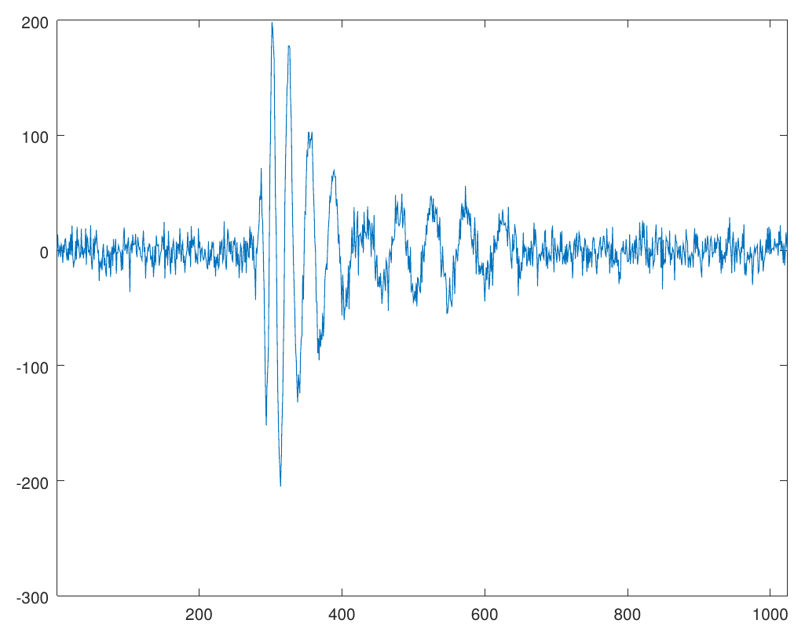
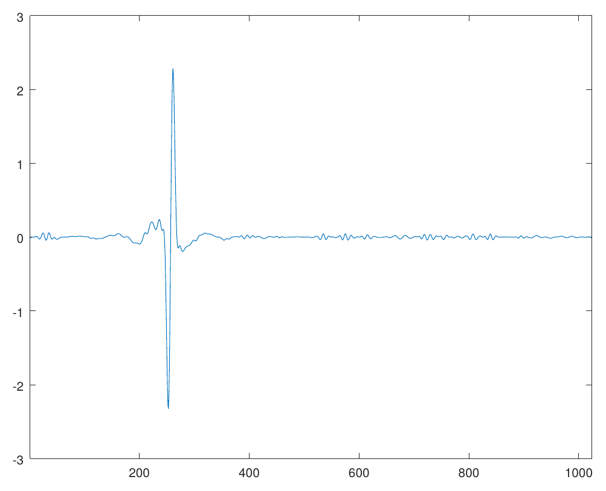

{% include math.html %}
My research interests include * Granular media * Solid mechanics and fracture * Nonlinear dispersive partial differential equations * Signal processing * Machine learning
Crushing, Comminution and Fracture: Extreme Particle Deformation in Three-Dimensional Granular Aggregates. Debdeep Bhattacharya, Davood Damircheli, Robert P. Lipton. 2025. arXiv
Design of resilient structures by randomization and bistability. Debdeep Bhattacharya, Tyler P. Evans, Andrej Cherkaev. 2025 doi arXiv
Energy balance and damage for brittle fracture: nonlocal formulation. Robert Lipton, Debdeep Bhattacharya. Journal of Elasticity, 2025. doi arXiv
Macroscopic effects of inter and intra particle dynamics on vehicle mobility using nonlocal particle based modeling Debdeep Bhattacharya, Robert Lipton. Granular Matter, 2025. doi arXiv
Quasistatic fracture evolution using a nonlocal cohesive model. Debdeep Bhattacharya, Robert Lipton, Patrick Diehl. International Journal of Fracture, 2023. doi arXiv
Quasistatic evolution with unstable forces. Debdeep Bhattacharya, Robert Lipton. Multiscale Modeling and Simulation, 2023. doi arXiv
Simulating grain shape effects and damage in granular media using PeriDEM. Debdeep Bhattacharya, Robert P. Lipton. SIAM Journal on Scientific Computing, 2023. doi arXiv
Peridynamics-based discrete element method (PeriDEM) model of granular systems involving breakage of arbitrarily shaped particles. Prashant K Jha, Prathamesh S Desai, Debdeep Bhattacharya, Robert P Lipton. Journal of the Mechanics and Physics of Solids, 2020. doi arXiv
Peridynamics for Quasistatic Fracture Modeling. Debdeep Bhattacharya, Patrick Diehl, Robert P. Lipton. Proceedings of the ASME 2021 International Mechanical Engineering Congress and Exposition. doi arXiv
Mass concentration of \(H^s\) blowup solution to 2D modified Zakharov-Kuznetsov equation Partial Differential Equations and Applications, 2021. doi arXiv
Unusual Near-Horizon Cosmic-Ray-like Events Observed by ANITA-IV. P. W. Gorham et al. Physical Review Letters, 2021. doi arXiv
Global well-posedness of the mZK equation in 2 dimensions for low-regularity data. Debdeep Bhattacharya, Luiz Gustavo Farah, and Svetlana Roudenko. Journal of Differential Equations, 2019. doi arXiv
Modeling The Launch Dynamics of a Large Scientific Balloon. Frank Baginski and Debdeep Bhattacharya, 43rd COSPAR Scientific Assembly, 2021. doi
Harmonic Analysis Techniques in Nonlinear Dispersive Equations and Signal Processing. Ph.D Dissertation, May 2020. ProQuest: 27831360
Deconvolution problem and application to ANITA signals, Report, submitted to ANITA collaboration at University of Hawai’i at Manoa (link)
Reduction of three-dimensional axisymmetric problems to two dimensions in Peridynamics, submitted to the NSF as part of MSGI program (link)
Modeling and simulating granular media are important for many industrial and geophysical applications. The shape of individual grains plays an important role in determining the mechanical response of the bulk. On the other hand, it is possible to design particle shapes so that the bulk has some desired property. For example, doloses are used to protect seashores from the erosive force of waves. Moreover, grain crushing affects the strength of the bulk. Therefore, simulating individual grains and modeling the interaction is crucial to understanding the collective behavior of the aggregate.

Particles settling under gravity. Shapes considered: square, plus, and perturbed disk.
{% include video.html url=“vid/2022-06-20-22-58-12-66cfg.mp4” width=“560” height=“315” %} {% include video.html url=“vid/2022-06-20-23-10-00-xuvrn.mp4” width=“560” height=“315” %}
Damage in plus-shaped dry gravel due to the vehicle wheel.
As a part of a Multidisciplinary University Research Initiative (MURI) to understand granular media via grain-scale engineering, with Prof. Robert Lipton I have studied the effect of particle shapes on the mechanical response of the aggregate, where the damage of individual grains is captured by peridynamics.
Understanding how solid materials deform and fail under external loading conditions has been a long-standing area of research for scientists and engineers for centuries. The classical approach is to treat the solids as a continuum and model the displacements of material points as a solution to a differential equation, known as the Cauchy Momentum equation. However, due to the differential formulation, the classical theory fails to describe material behavior when the deformation field is non-differentiable at certain material points, for example, when a fracture is formed.
Introduced by Stewart Silling in 2000, peridynamics has become useful to address this limitations. Peridynamics assumes that every material point interacts with its neighbors via a bond force and reformulates material deformation using an integral equation, thus accommodating discontinuous deformations, such as fractures. Peridynamics has been used to model crack formation and crack branching, among many other fracture problems.

{% include video.html url=“vid/contour-bifurcation.mp4” width=“560” height=“315” %}Simulation of crack propagation and branching in soda-lime glass with a pre-notch under external force in the outward vertical direction [code]


Crack formation and crack branching upon impactWorking with Pablo Seleson and Jeremy Trageser at the Oak Ridge National Laboratory, I considered three-dimensional axisymmetric problems, where the geometry of the material is symmetric about an axis of symmetry and the external loading conditions are such that the deformation fields are symmetric about the same axis of symmetry. This is an important class of problem in solid mechanics where the symmetry can be exploited to reduce dimension of the problem. We derived the two-dimensional model that exactly represent the full 3D axisymmetric linear peridynamic model by incorporating out-of-plane bond forces into the representative 2D plane, thus reducing the computational cost significantly.
Dispersive equations model the propagation of waves in various media. Nonlinearities make the study of dispersive equations more realistic, as well as mathematically interesting. For example, when the effect of nonlinearity opposes the effect of dispersion (focusing case), these equations exhibit peculiar solutions called solitons that retain their spacial localization for a long time. John Scott Russell observed such solitary-waves in a shallow river in 1834. Here is an experiment.
My work on nonlinear dispersive equations has been about the low-regularity theory, especially in the critical regime, where we can observe a dichotomy between global existence and blow-up of the solution in finite time, depending on the profile of the initial data. With Svetlana Roudenko and Luiz Gustovo Farah, I have studied the Zakharov-Kuznetsov equation
{% raw %} \[ v_t + \partial_x (\Delta v) \pm \partial_x (v^{2}) = 0 \] {% endraw %}
and its modifications, which model propagation of ion-accoustic waves in magnetized plasma. It is also one of the higher dimensional generalizations of the celebrated Korteweg-de Vries equation that models shallow water waves.
The main tool used in my work on asymptotics of low-regularity data is known as the I-method, which was featured in 2006 Fields Medal citations for Terrence Tao. Using harmonic analytic tools like Fourier analysis and Littlewood-Payley analysis, we carefully investigate of the interaction of the constituent frequencies of the solution to establish an almost conservation law for the energy functional of a mollified solution. Using this law, we iterate the local existence theory finitely many times to establish the global well-posedness for rough data. On the other hand, we prove that low-regularity solutions which blow up in finite time have the property that the mass of the solutions concentrates inside a ball of shrinking radius. The main tools here are the I-method and an almost-orthogonal profile decomposition.
//: Currently, I am studying the inhomogeneous nonlinear Schrödinger and the Hartree equation.
During Summer 2018, I had the opportunity to work with the ANITA collaboration, a research group conducting balloon experiments in the antarctic region with a goal to detect ultra-high energy neutrinos. Filtering out electro-magnetic noise picked up by the highly sensitive antennas of ANITA payload and de-blurring the signals is known as the deconvolution problem in signal processing. I worked with the astrophysicists at the University of Hawai’i at Monoa under the supervision of Peter Gorham on the deconvolution problem using Fourier and Wavelet analysis and implemented a C++ library called libWTools. I am currently working on a multi-antenna generalization of this algorithm.

|
|A blurred, noisy signal (left) is deconvolved (right) using the ForWaRD algorithm [code]
I am interested in using machine learning techniques as yet another problem-solving tool. Here is my repository that contains my notes and solved exercises from the book Hands-On Machine Learning with Scikit-Learn and TensorFlow. While documenting my understanding, I became more interested in the underlying mathematics of it.